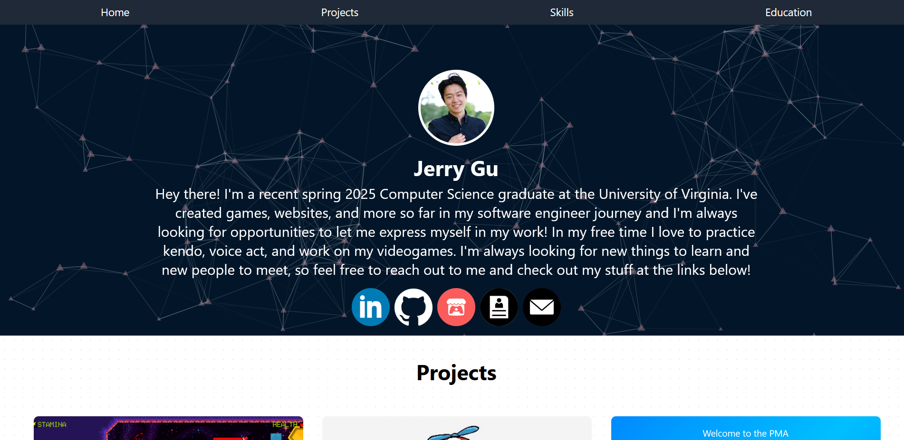

I Forgot Coding Was Actually Fun
The website you're reading now didn't always look like this. Before I had a website that I vibecoded with ChatGPT and created to maybe get some sort of edge in an interview process in a university student's desperate scramble to get a job out of college. I'm not quite sure if it helped or if anyone actually looked at it, but it's all gone now. I had made that website with a vision of just a basic one-page portfolio site with fancy icons and something visually appealing in hopes of convincing a recruiter that I was more employable. And for what it's worth, I think it served its purpose pretty okay.
It wasn't the prettiest thing, or the fanciest thing, but it was what I could vibe out quickly that would do its main purpose and worked well enough. But the process of building something that was representative of who I was to be launched into the interwebs in perpetuity wasn't representative of why I wanted to do computer science in the first place.

RIP old vibecoded site...
Being a Student in the Age of Gippity
ChatGPT really came into the public eye with GPT 3 when I was in my second year of my computer science degree, and boy howdy did it really make things weird. I remember sitting in my into discrete mathematics class as my friend had it spit out some program in Java that didn't even compile. A year later, I would basically be interrogating it for assistance on practically every assignment I had, and to help study for every exam.
I remember having moments of real joy when trying to actually figure out problems on my own in my first year. Whether it was using python to create little games or writing assembly to do something as benign as multiplication, the satisfaction when you finally solved the problem on your own was incredible.
Then, it was time to start finding my first internship. At some point the feeling of "the number must go up or your life will be over" started to take over. I had joined the rat race of studying LeetCode, spamming job applications, running my resume through ATS scanners, the whole gamut. While it's definitely a bit of a soul crushing experience in the moment, such is the real world sometimes. Gotta get the job, so you just grind.
And whenever I had to put in a GPA number into the application or select a GPA range lower than the highest option, it certainly didn't help the feeling of existential dread. The "Get big number or you will be out of a job and your whole life will be a disappointment", kind of dread. It's not a great feeling.
The computer science department at my school was in a complete scramble due to LLMs as students were just vibecoding their way through assignments meant to help them learn just so they could get the good GPA number. As much as I wish I could say I wasn't this student, I definitely was. Somewhere along the line, the desire to get the degree with the cool GPA number sucked the fun out of learning, and out of struggling. Even after college, I still found myself creating personal projects, but vibecoding using an LLM to try and generate my way to something I wanted to create. I never stuck with any of those projects for longer than a couple months. As soon as I ran into a bug GPT couldn't solve, I didn't know the codebase well enough, didn't actually learn anything from vibecoding, and soon gave up.

At some point in a vibecoding session it begins to feel like this
Interrogating an LLM is Just Not That Fun
Don't get me wrong, I don't want this to be another crusade against AI. As a programmer, AI clearly is pretty dang good at doing a lot of tasks. I use it professionally all the time to great effect, I think the memes or articles bashing it don't have a lot of nuance to them. Especially now in 2026, they can spit out incredible code quality extremely quickly. And the code quality can be quite good with the right prompting and the right usage. Is it perfect? No. Does it get things wrong still? Yes. I'm not saying it's perfect, but to wholly discard its use case for a lot of projects would just be folly. Anyways, I digress.
This is more about the personal experience of using one through the years. When it comes to actual programming, to me prompting is just not as satisfying an experience than sitting down and going through the problems yourself as you code by hand. Or "rawbraining" as I saw on Reddit. But even I have to admit in many use cases it does indeed get the job done well and faster than a human would. I think there is a speed limit of course, just sending millions of lines of code unreviewed is bound to cause some issues down the line. But it is pretty amazing to see it catch bugs in whitespace or typos that would have otherwise caused hours and hours of headaches, and honestly I really appreciate it in those moments.
But sitting down and interrogating the LLM as to why it's hallucinating, why it's made certain decisions, or why it decided to commit something horrible to Git despite my explicit instructions not to is just not a joyful experience. I'm more supervising a factory assembly line of code, than sitting down and crafting it myself. This isn't to say that "all vibecoded things are bad" or anything like that. That old vibed site was pretty cool, and it served its purpose to its end. I didn't really have any joy making it, nor did I learn very much, but that wasn't its original purpose anyway. It was just to have something that could maybe impress a recruiter so I could get employed. Even when it's working flawlessly, it's hard to feel that same satisfaction of a job well done, than if you handwrote every line.
Now mind you, this isn't some new revelation or anything, but for me sometimes when I'm learning on my own it's genuinely hard to keep going through the frustration of debugging when you know that you can just toss it into an LLM, and it'll take away that frustration. Something something marshmallow test, immediate awards, something something, we've known this idea forever.
I Started Learning C++
So when I sat down and decided I wanted to learn a new language, C++ came to my mind as the primary candidate. I was pretty interested in graphics programming as it seemed pretty cool to draw pictures and I learned a lot about how hardware and software interact to display pixels. But I also resolved to myself that I wouldn't ever sit down and prompt and AI to build something for me. I'm not some knight in shining ethical armor who can now code like John Carmack after renouncing LLMs though. I can just code for fun now, which is nice.
Sitting down and actually typing out all the symbols, looking things up in the documentation, and reading 14-year-old Stack Overflow arguments really brought me back to the fun I first had when learning how to program. You could really feel the human connection as people were just excited to ask questions and learn, and create code for humans. But it also was just very satisfying. I got taken back to the feeling of craftsmanship, of actually creating something for me as an expression of myself, rather than for somebody else.
And that's the thing that I think I had forgotten as a programmer, that at its best it can be a beautiful expression of the self. That's why I chose this barebones HTML static site aesthetic, because I loved the simplicity and just cutting through the noise. I scrapped the flashy interactive JavaScript pointer because that wasn't who I was, or what I wanted to do. I put that in because I thought it might impress somebody else, not because I wanted to make something. I didn't make it after all, I took that from somebody else! Not that I didn't take any code from other people for this site, this HTML you're reading was parsed by the md4c Markdown to CPP parser. The idea to rebuild this website and to blog, and to even do a Static Site Generator came from coming across this article on fighting games from PhiDX's video commentating over it.
As a quick sidenote, when it came to fixing bugs related to CMake, I eventually did just ask an LLM to help me write the CMake because honestly it was so frustrating and joyless I might as well hand it to the LLM. Why am I learning a new confusing language just to have my CPP compile??? So confusing to try and get this package in, and actually a lot of the LLM solutions were very wrong anyway and I eventually just figured it out myself. But still, it helped me figure out what was happening along the way...
Am I... Enjoying LeetCode????
I never thought I'd say this, but I tried writing LeetCode as a way to learn some common functionalities and data structures for C++ and I couldn't believe that I was actually enjoying it. I mean after literal years of feeling like I was forced at gunpoint to grind LeetCode or never get a job, the words "two sum" only evoked soul sucking dread that you were never going to get a job. But writing LC in a new language by hand and looking up documentation and challenging myself to think like a computer was an actually fun experience. I mean truly I never actually thought that this would ever be the case and I would be forced to just grind for the rest of my days.
The thing about LLMs that I've learned is that they allocate the frustration of coding outside the actual
experience of coding and into the LLM's faults instead. You're no longer solving the problem as much as you are solving
the LLM, and repeatedly typing "___ didn't work, fix it". So when the problem is eventually solved, I don't really get
the personal satisfaction of knowing that I did something cool. Instead, it's more just "finally got the thing done".
And for a professional environment, that's totally fine, I mean we're here to do a job. But for a personal project or
learnings on my own, I've come to realize the importance of slowing down and writing it down by hand.
So that's why this website isn't very fancy, it's probably not going to have a lot of features, but I know that I made it the way I envisioned it with my own hands. But most importantly, I learned a million times more doing it than when I vibe coded the first site years ago. So don't forget that coding is actually pretty awesome and fun, and if you're a programmer, you try some raw braining from time to time to remind you of how fun it when you first started.
And don't forget to stretch those wrists!
Jerry
YOU'RE HALLUCINATING WHY ISN'T THIS WORKING PLEA-
© 2026 Jerry Gu. All Rights Reserved.